HƯỚNG DẪN SỬ DỤNG
HỆ THỐNG QUẢN LÝ VÉ TÀU
1. Giới thiệu ứng dụng
Hệ thống quản lý vé tàu là ứng dụng hỗ trợ công tác bán vé và quản lý hoạt động
vận hành tàu hỏa tại nhà ga. Hệ thống được xây dựng nhằm thay thế các nghiệp vụ
thủ công truyền thống, giúp giảm sai sót, nâng cao hiệu quả làm việc và cải thiện
chất lượng phục vụ hành khách.
Ứng dụng cho phép quản lý tập trung các thông tin liên quan đến tàu, chuyến tàu,
vé tàu, khách hàng, hóa đơn và các chương trình khuyến mãi. Đồng thời hỗ trợ
thống kê doanh thu theo nhiều tiêu chí khác nhau.
Đối tượng sử dụng gồm nhân viên bán vé và người quản lý. Giao diện thân thiện,
dễ sử dụng và phù hợp với nghiệp vụ thực tế.
2. Chức năng của nhân viên
2.1 Đăng nhập
Tài khoản: nhanvien1
Mật khẩu: 123456
- Nhập tên tài khoản
- Nhập mật khẩu
- Nhấn nút Đăng nhập
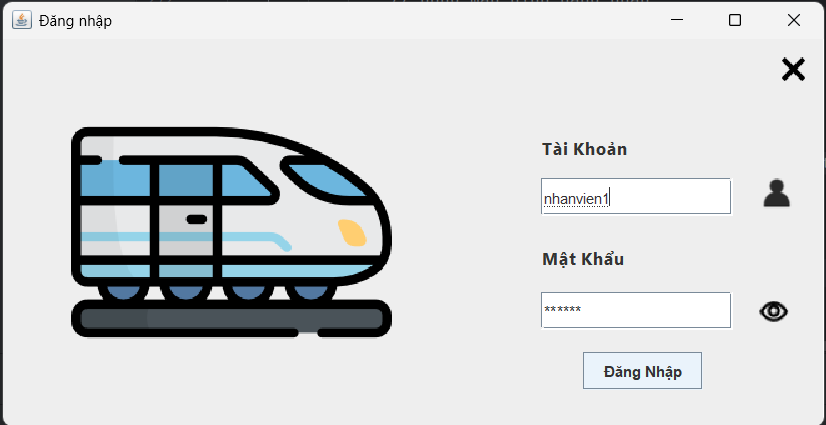
2.2 Mua vé
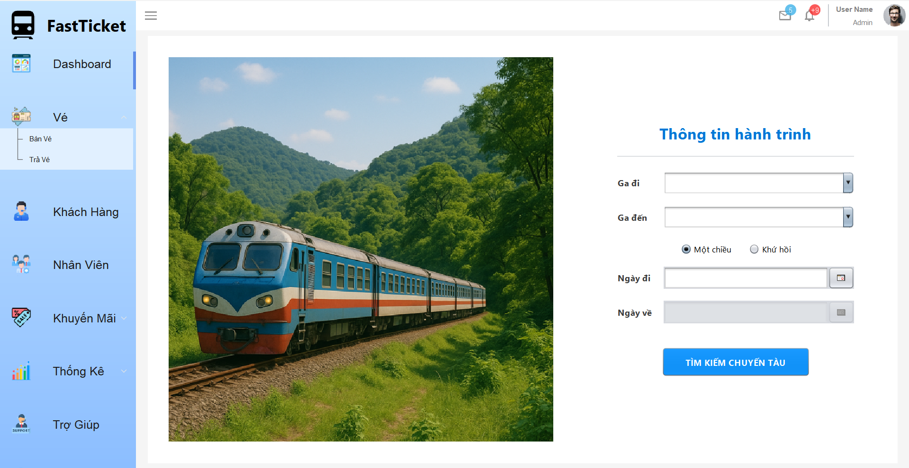
Thông tin nhập để mua vé :
- Ga đi, ga đến
- Chọn một chiều hoặc khứ hồi
- Ngày khởi hành, ngày về (nếu khứ hồi)
- Vui lòng chọn Tìm kiếm chuyến tàu
Sau khi chọn tìm kiếm sẽ chuyển sang màn hình tiếp theo
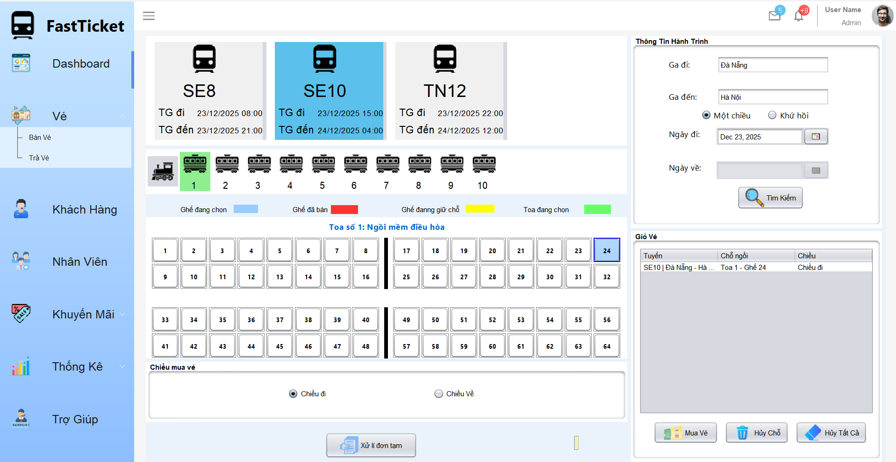
Các bước mua vé:
- Chọn tàu
- Chọn toa
- Chọn chỗ ngồi
- Kiểm tra lại thông tin chỗ đặt hoặc thay đổi nếu cần
- Vui lòng nhấn nút Mua vé
Chỗ được chọn sẽ có màu xanh và hiện thông tin.
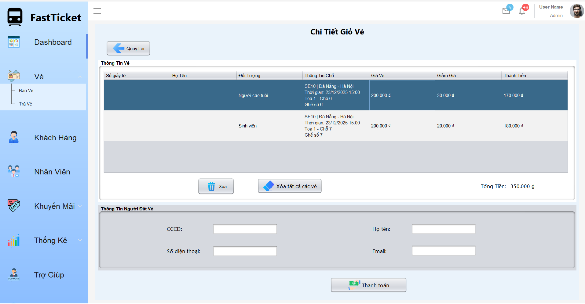
- Nếu khách hàng muốn đổi ý có thể chọn xóa vé
- Nhập thông tin khách hàng
- Xác nhận và thanh toán
Bước thanh toán:
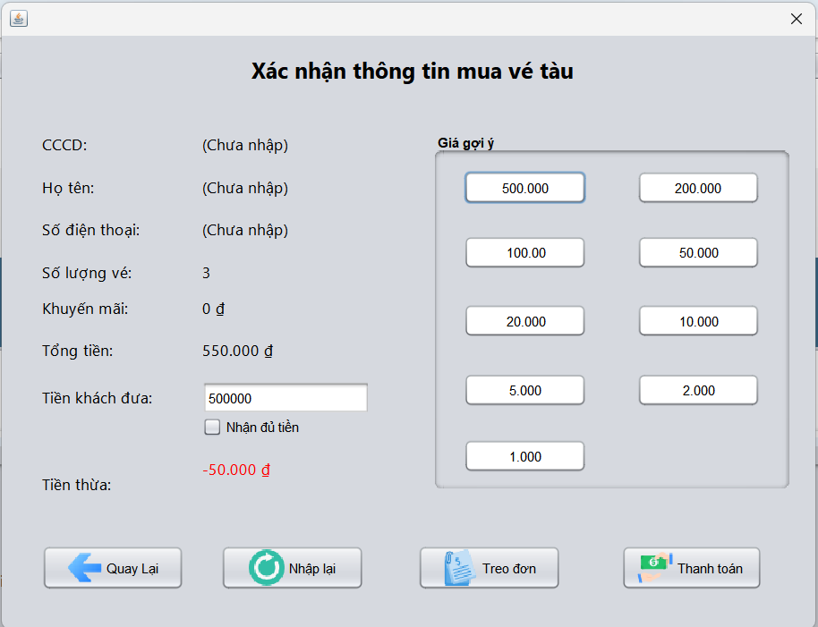
- Nếu gặp sự cố nhấn nút treo đơn ( nếu không có gì đến bước tiếp theo )
- Chọn hoặc nhập số tiền khách hàng đưa , màn hình sẽ hiển thị số tiền thừa
- Nếu nhập sai có thể chọn nhập lại
- Xác nhận và thanh toán
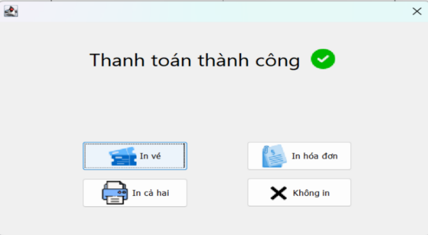
Màn hình sẽ thông báo thanh toán thành công. Vui lòng chọn một trong bốn chức năng trên để thực hiện.
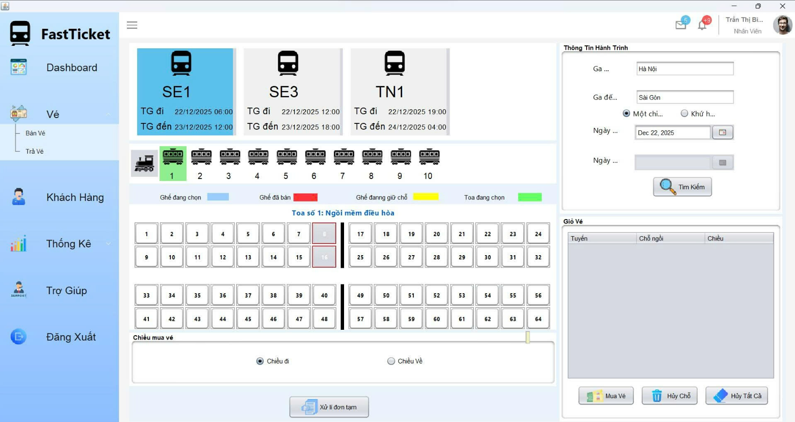
Sau khi bán thành công, những chỗ đã được đặt sẽ hiển thị màu đỏ. Có thể huỷ chỗ hoặc xử lý đơn tạm nếu cần.
Ngoài ra:
- Nhập thông tin hành trình và nhấn “Tìm” nếu muốn thay đổi
- Nhấn “xử lý đơn tạm” để tiếp tục thực hiện thanh toán
- Chọn vé trong danh sách vé chọn và nhấn “huỷ chỗ” hoặc “hủy tất cả” nếu khách hàng yêu cầu
2.3 Trả hóa đơn – Trả vé
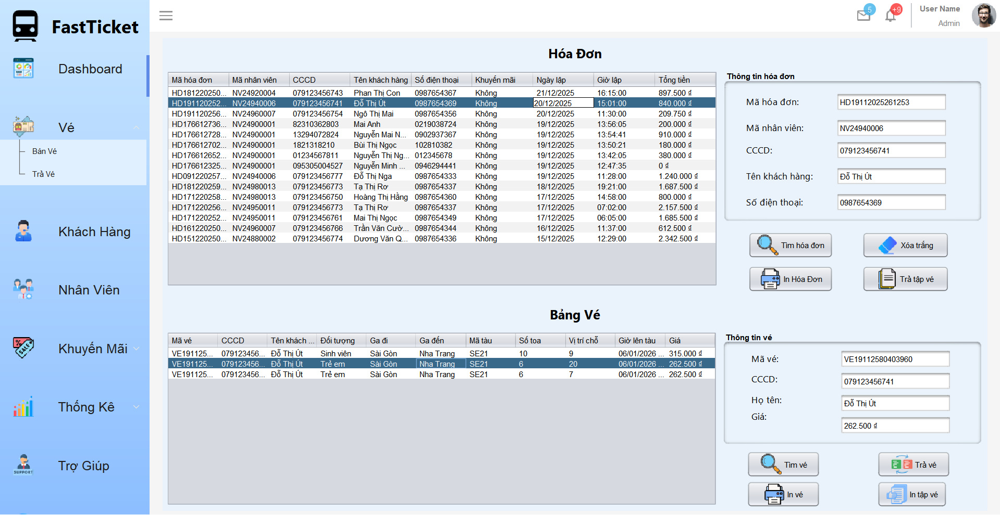
Trả hóa đơn:
- Tìm hóa đơn theo mã
- Chọn vé cần trả
- Xác nhận trả hóa đơn
Trả vé:
- Chọn hóa đơn
- Chọn vé cần trả
- Xác nhận số tiền hoàn
Vé chỉ được trả trước giờ tàu khởi hành ít nhất 24 giờ.
2.4 Quản lý khách hàng
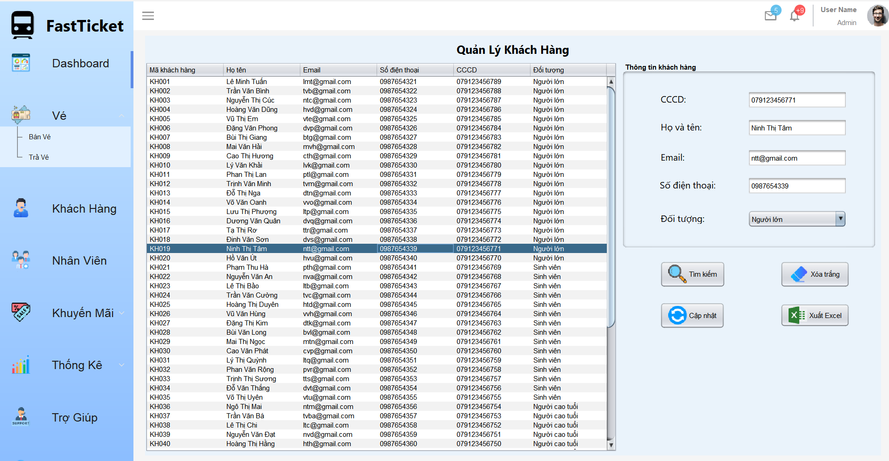
- Tìm kiếm theo số điện thoại
- Xóa tất cả thông tin trên bảng
- Cập nhật thông tin khách hàng
- Xuất danh sách ra file Excel
2.5 Thống kê
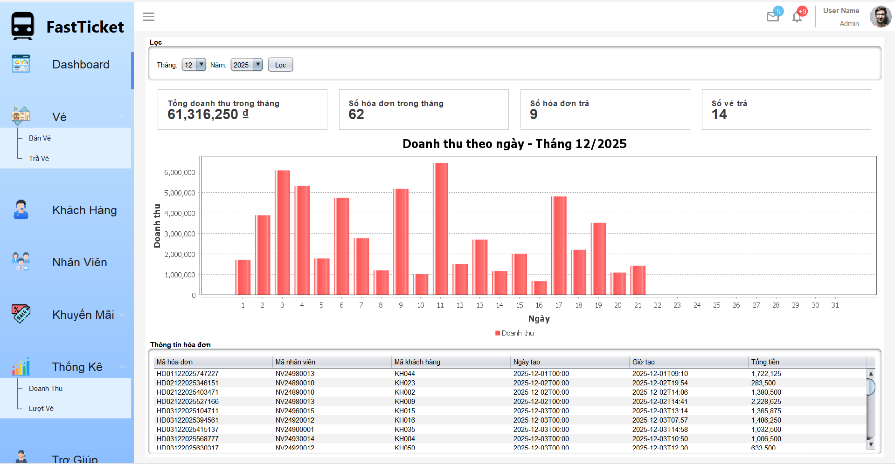
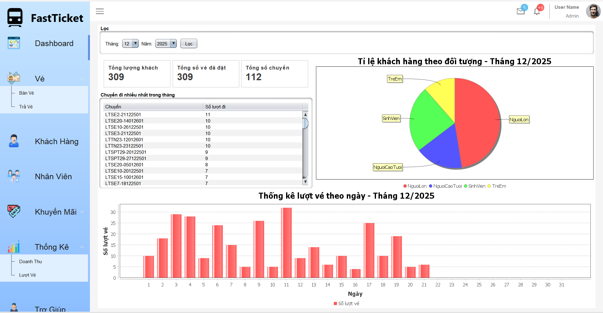
- Chọn tháng và năm
- Xem doanh thu và các chuyến đi nhiều nhất
3. Chức năng của quản lý
3.1 Đăng nhập
Tài khoản: quanly1
Mật khẩu: 123456
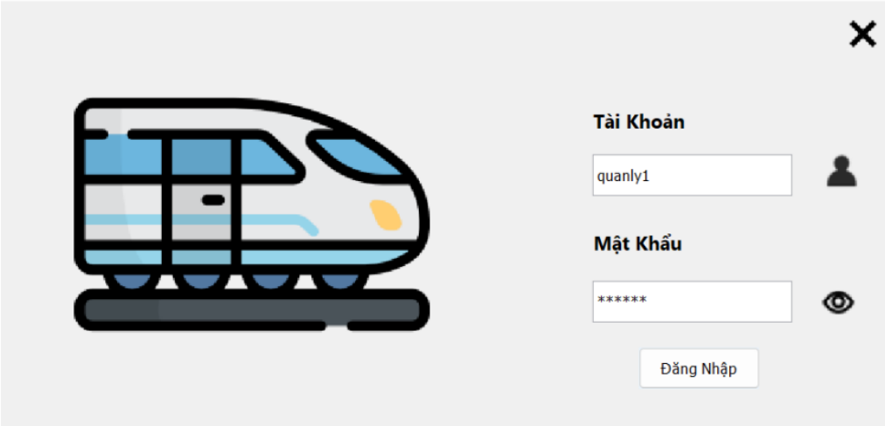
3.2 Quản lý nhân viên
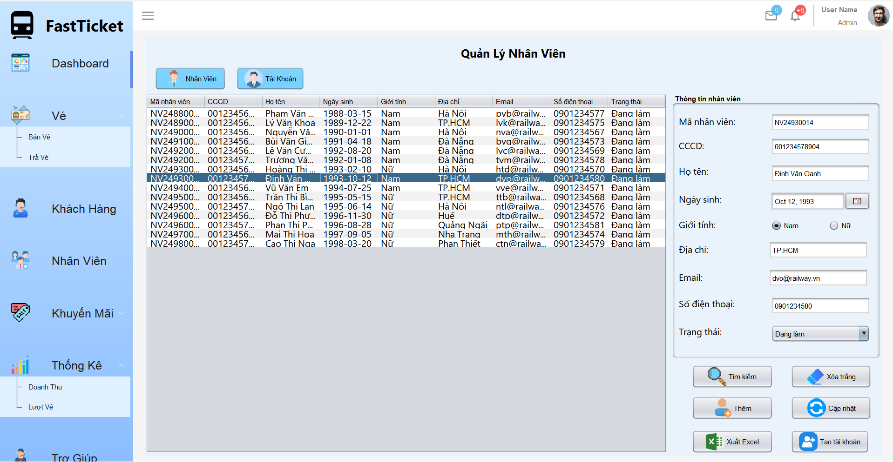
Thêm nhân viên mới
- Nhập các thông tin của nhân viên mới vào các ô dữ liệu (không cần nhập mã nhân viên):
- Nhập cccd với 12 ký số
-
Chọn ngày sinh với điều kiện tính đến ngày hiện tại phải đủ 18 tuổi
- Nhập họ tên không được chứa ký tự đặc biệt ọn giới tính
- Nhập địa chỉ
- Nhập email có đuôi là @gmail.com
- Nhập số điện thoại đủ 10 số
- Nhấn chọn nút “Thêm”. Nhân viên mới sẽ được thêm vào cơ sở dữ liệu và hiện lên danh sách.
2.2.3 Cập nhật nhân viên
Các bước cập nhật thông tin nhân viên:
- Chọn nhân viên muốn cập nhật bằng cách chọn trực tiếp trên bảng hoặc tìm nhân viên bằng CCCD hay số điện thoại.
- Chọn và thay đổi các thông tin cần cập nhật trên các ô dữ liệu (họ tên, ngày sinh, giới tính, địa chỉ, email, số điện thoại...).
- Nhấn chọn nút “Cập nhật” để lưu lại thông tin đã chỉnh sửa.
Chọn ngày sinh với điều kiện tính đến ngày hiện tại phải đủ 18 tuổi
- Nhập họ tên không được chứa ký tự đặc biệt ọn giới tính
- Nhập địa chỉ
- Nhập email có đuôi là @gmail.com
- Nhập số điện thoại đủ 10 số
- nhấn cập nhật, dữ liệu sẽ được cập nhật
2.2.4 Tạo tài khoản nhân viên
Các bước tạo tài khoản cho nhân viên:
- Chọn nhân viên muốn tạo tài khoản bằng cách chọn trực tiếp trên bảng hoặc tìm nhân viên bằng CCCD hay số điện thoại.
- Nhấn nút “Tạo tài khoản” với điều kiện nhân viên được chọn chưa có tài khoản.
- Nhập tên tài khoản và mật khẩu vào phần “Thông tin tài khoản”.
- Nhấn nút “Thêm” để lưu lại tài khoản vừa mới tạo.
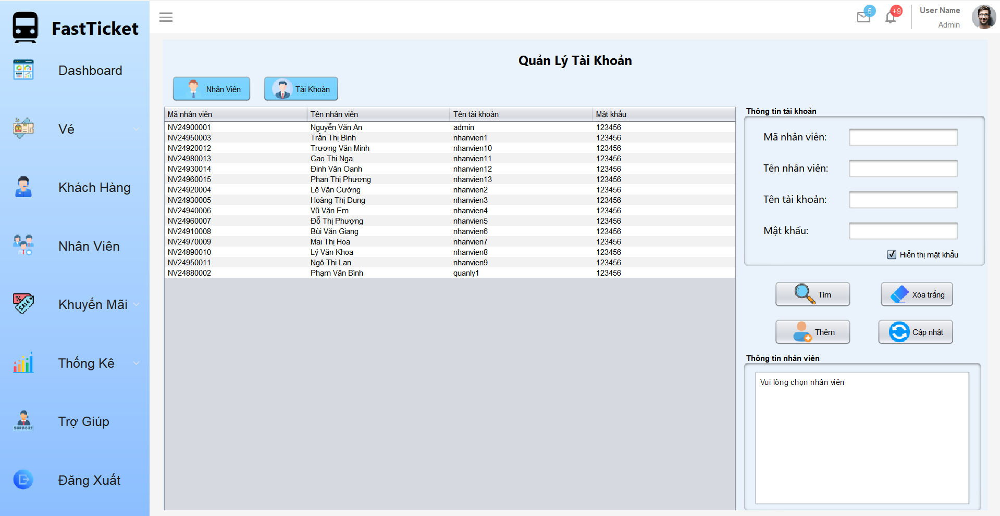
2.2.5 Cập nhật tài khoản nhân viên
Các bước cập nhật tài khoản nhân viên:
- Chọn tài khoản muốn cập nhật bằng cách chọn trực tiếp trên bảng hoặc tìm tài khoản bằng tên tài khoản.
- Thay đổi thông tin tài khoản (tên tài khoản, mật khẩu) trong phần “Thông tin tài khoản”.
- Nhấn chọn nút “Cập nhật” để lưu lại thông tin đã thay đổi.
3.3 Quản lý khuyến mãi
2.2.6 Thêm khuyến mãi
Các bước thực hiện thêm khuyến mãi:
- Nhập các thông tin khuyến mãi muốn thêm mới vào các ô nhập dữ liệu (không cần nhập mã khuyến mãi).
- Nhấn nút chức năng “Thêm”. Hệ thống sẽ lưu thông tin khuyến mãi và hiển thị lên bảng danh sách.
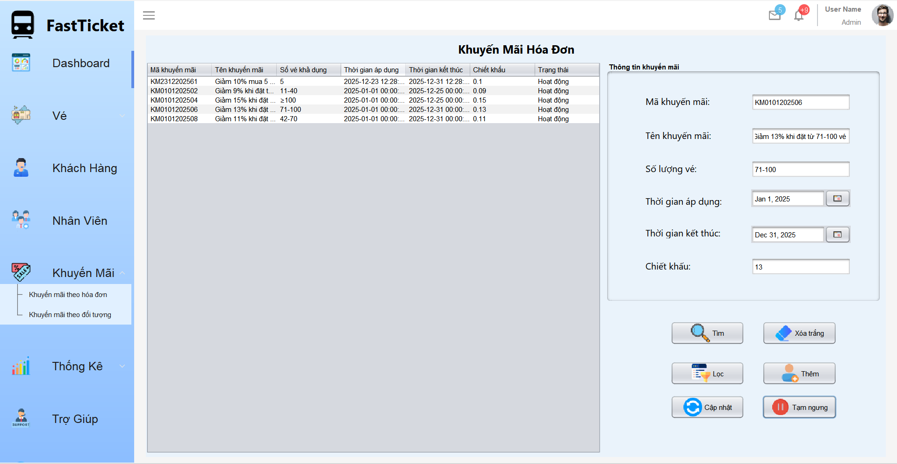
- Hệ thống hiển thị thông báo, nhấn OK để hoàn tất quá trình thêm khuyến mãi.
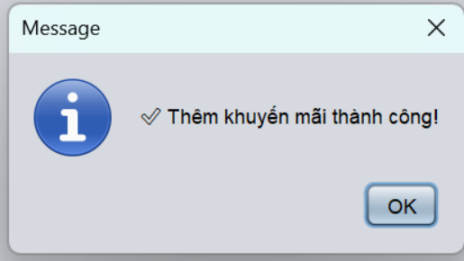
2.2.7 Cập nhật khuyến mãi
Các bước thực hiện cập nhật khuyến mãi:
- Chọn khuyến mãi muốn cập nhật bằng cách chọn trực tiếp trên bảng, sau đó nhấn chức năng “Cập nhật”.
- Cập nhật lại các thông tin muốn thay đổi trên các ô nhập dữ liệu.
- Nhấn chọn chức năng “Cập nhật” để lưu lại thông tin đã thay đổi.
- Nếu muốn tạm ngưng khuyến mãi, nhấn chọn nút “Tạm ngưng”.
- Nếu muốn kích hoạt lại khuyến mãi, chọn khuyến mãi đang ở trạng thái tạm ngưng và nhấn lại nút “Tạm ngưng”, hệ thống sẽ tự động kích hoạt lại khuyến mãi.
4. Các quy định
4.1 Quy định trả vé
- Trả vé trước giờ tàu chạy 24 giờ
- Hoàn 100% nếu trả trước 7 ngày
- Hoàn 80% nếu trả trước 7 ngày
- Hoàn 50% nếu trả trước 2–3 ngày
4.2 Quy định mua vé
- Trẻ em dưới 6 tuổi: miễn vé
- Trẻ em 6–10 tuổi: giảm 25%
- Người cao tuổi (≥60): giảm 25%
- Sinh viên: giảm 10%
Khuyến mãi theo số lượng vé:
- 10–19 vé: giảm 15%
- 20–29 vé: giảm 20%
- 30–49 vé: giảm 25%
- ≥50 vé: giảm 30%